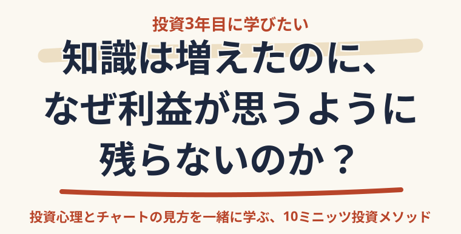
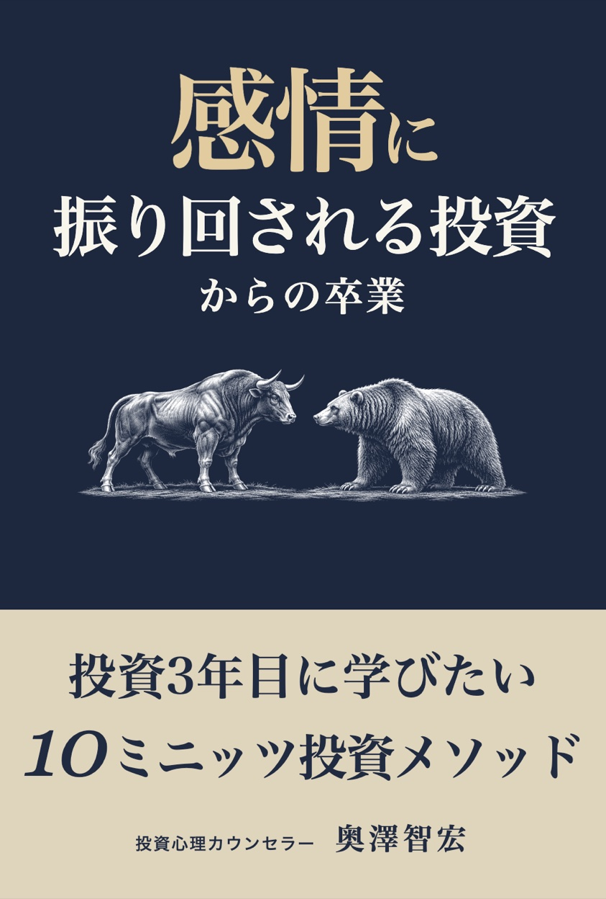
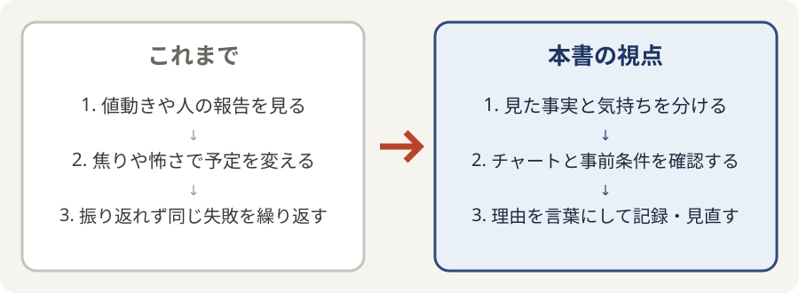
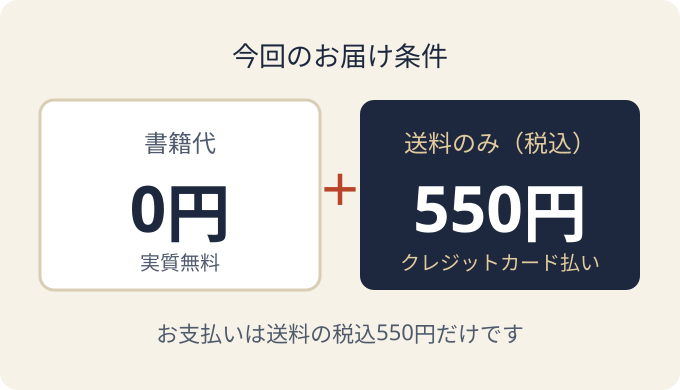
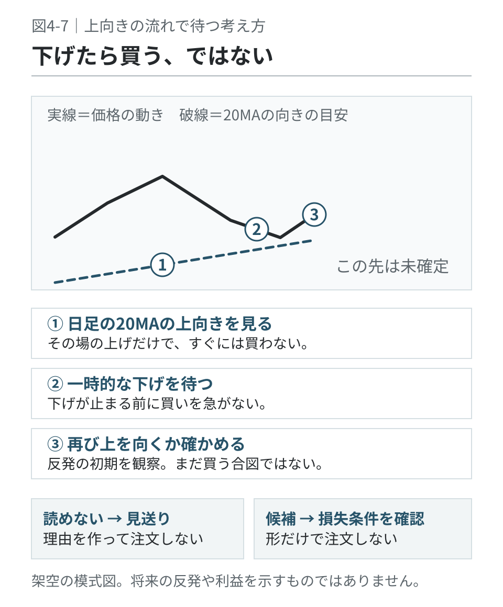
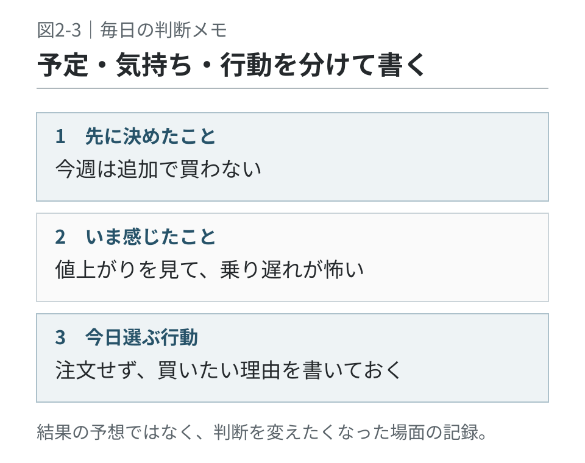

急な値上がりを見た朝
飛びつく前に「見た事実」と「焦り」を分け、買う予定がなければ画面を閉じる。


今回は書籍代0円・実質無料でお受け取りください
まずは一冊を手に取り、相場の見方とご自身の判断を言葉にして振り返る練習を始めていただきたいと考えています。そのため今回は書籍代をいただかず、送料税込550円のみご負担いただく形でお届けします。
DOES THIS SOUND FAMILIAR?
積立投資を続けたり、企業の業績を調べたり、株やFXの売買を試したりしてきた。それでも、自分で「いつ買うか」「いつ売るか」を決めようとすると、知識とは別の難しさにぶつかります。
値上がりを見ると、
予定外に買ってしまう
少し利益が出ると、
怖くなって早く売ってしまう
見通しが外れても、
損失を認めるのを先延ばしにする
新しい情報を足す前に、知っていたはずの条件をその場の感情で書き換えていないか確かめてみませんか。本書は、相場の見方と自分の心の両方を整える考え方と練習を紹介します。
THE DIFFERENCE
企業情報やニュースを増やし、気合いで冷静さを保とうとする
心の揺れに気づき、価格の動きと事前の条件を照らし合わせる
本書の提案は、企業分析を活かしながら「価格の動き」と「自分の心」を一緒に学ぶこと。
長期・積立・分散投資や、企業の事業・業績を調べるファンダメンタルズ分析は、資産形成の大切な方法です。本書はそれらを否定しません。ただ、良い企業を選ぶ問いと、今日の値動きを見て「今買うか、今売るか」を決める問いは別のものです。
必要な知識を知っていても、お金が増減する場面では焦りや怖さが動きます。本書では感情を消そうとせず、まず気持ちに気づいて立ち止まる練習をします。そのうえで、売買の時期を確かめる目印として価格の記録（チャート）と損失管理を学び、判断の理由を言葉にできるようにしていきます。

ONE SMALL SHIFT
朝は買う予定がなかった株が急に値上がりしたとします。すぐに注文画面を開くのではなく、まず紙に3つの答えを1行ずつ書き分けてみてください。
「価格が上がった」という事実と、「取り残されたくない」という焦りは同じではありません。分けて書く習慣をつけることで、勢いのまま予定を書き換える前に立ち止まりやすくなります。
「自分の判断を見直してみたい」と感じた方へ。本書を今回は書籍代0円・送料税込550円のみでお届けします。
送料のみ・税込550円で本を受け取る →SIX STEPS IN THIS BOOK
いきなり専門用語から入らず、心の土台からチャートの見方、損失管理、続け方へと進みます。
すべてを一度に覚え切る必要はありません。巻末の用語集や記入シートを使い、できるところから試せます。
WHAT 10 MINUTES MEANS
副題にある「10ミニッツ」は、前もって選んだ対象と条件を、朝の10分を目安に確かめる考え方です。学習や事前の準備、損失計算、注文手続き、振り返りまで取引全体が10分で終わるという意味ではありません。決めた時間に短く確認し、条件に合わなければ見送ることで、仕事や暮らしの時間と両立しやすくなります。
A BOOK TO PRACTICE JUDGMENT
著者が大切にするのは、たった一つの必勝法を探すことではなく、投資を一つの学問として学び続ける姿勢です。相場の見方と、それを扱う自分の心を車の両輪として整え、条件に合わない日は「見送る」ことも技術として身につけます。まずは今日、自分の判断を一行書くところから始めてみませんか。
01 / 04 INSIDE THE BOOK
言葉や方法の名前を伏せています。使う場面と掲載の章・節から、ご自身の売買に重ねてみてください。
相場を開いて値上がりしている銘柄を見ると「今入らないと機会を逃す」と感じ、買う理由を決めていないのに注文してから理由を探してしまう。投資家が陥りやすい三つの落とし穴の一つ目です。
利益がほしい気持ちに一日中翻弄されず、心が揺れたあとも自分が決めた行動に戻れる状態を表す著者の言葉。相場を当てる力ではなく、立ち止まれる行動から考えます。
月足・週足・日足など長さの違う時間幅で同じ相場を照らし合わせ、目の前の値動きを大きな流れの中に置いて考える見方。川の流れにたとえて整理します。
上向きの流れの途中にある一時的な下げを待ち、下げ止まりと再び上へ向く兆しを観察してから買いを検討する考え方。「下がったから安い」とすぐ買う動きと区別します。
買える株数を先に考えるのではなく、1回で引き受けられる許容損失額と予定損失幅から、買う株数の計算上限を導く手順。無理な取引を避ける土台になります。
02 / 04 INSIDE THE BOOK
まずは「いま困っていること」から。気になる章・節から読み進められます。
少し利益が出ると、予定より早く売ってしまう
もっと勉強すれば、冷静に判断できる？
感情を消そうとせず、3つの問いで立ち止まる
生活費と取引資金を分けることが、心の土台になる
知識があるのに動けなくなる「心のブレーキ」
大儲けを追う姿勢から「投資は学問」へ
相場の前に、毎日3行で自分の判断軸を確かめる
負けた直後に、次の注文を急ぎたくなる心理
企業分析とチャートは、どちらが正しいのか
03 / 04 INSIDE THE BOOK
現物株の買いの一例を使い、価格の動きと損失管理の考え方を一つずつ確かめます。
「良い会社だから戻る」と対応を先延ばしにする前に
株・為替・金。価格の記録があれば、同じ問いを持てる
ローソク足は1本ではなく「並び」で見る
20本移動平均線で、日足の少し長めの向きを確かめる
値動きの広がりを参考にする「帯」の見方
足元の変化を見る補助線「5MA」の役割
用語が難しいと感じたら、見たことを3行で書く
買う前に「利益側と損失側の2つの出口」を書く
日中に画面を見られない人のための「逆指値注文」
04 / 04 INSIDE THE BOOK
一度の取引にとどまらず、自分の生活に合う形で学び続けるためのページも収録しています。
1銘柄ずつは小さく見えても、複数保有で損失は重なる
10回中6回勝っても、損をする場合がある理由
たまたま勝った取引と、次につながる取引の違い
価格通知（アラート）を使うときの注意点
スキャルピング、デイトレ、スイングの違いを生活から選ぶ
実資金の前に、デモ取引と紙上検証で確かめる4項目
生活の変化に合わせて、投資の方法を選び直すサイン
何もしない日も、基準を守り抜いた立派な実行
日々の練習にそのまま使える3つの記入シート
『感情に振り回される投資からの卒業』
投資の本を手に取るとき、自分に合うか迷うこともあります。判断の練習をまず始めていただきたいため、今回は書籍代をいただかず、送料税込550円のみでお申し込みいただけます。
お届け先のご住所を入力いただければ、紙の本をご自宅へお送りします。お支払いはクレジットカード決済の550円のみで、書籍代のご負担なくじっくりとお手元で確かめられます。

専門用語が並ぶチャート解説から入ると、途中で難しく感じることがあります。本書は積立投資や企業分析を否定せず、なぜ売買の場面で判断が揺れるのかという心の仕組みから順に進みます。
チャートの解説も現物株の買いの一例に絞り、見る目印をシンプルに整理しました。初めて目にする言葉が出てきても、巻末の用語集へ戻りながらご自身のペースで読み進められます。

本を読んで理解したつもりでも、実際の値動きを前にすると迷いが出やすいものです。巻末には取引前の判断メモ、取引後の記録、1週間の振り返りの3つのシートを収録しています。
何を見て、何を感じ、なぜ買う・見送ると考えたのかを自分の言葉で残す練習から始められます。一人で続ける中で別の視点がほしくなった方へ、スクールの練習方法も紹介しています。

※著者の経歴・資格・実績は本人の説明に基づく情報です。本書は利益を保証するものではありません。
EPISODES IN THE BOOK
「複雑な指標を減らし、考え方を整理できた」チャート上に複雑な指標をいくつも表示して判断に迷っていた受講生Aさんの声です。考え方をシンプルに整理できた、と振り返っています。成績が改善した証明ではなく、迷いが整理されたという本人の感想として収録しています。
本書「はじめに」・本文末注※2より要約
「自分が何に反応しているかに気づいた、2人の受講生の声」第3章では、心理面に向き合った受講生の感想を紹介しています。値動きを見続けてしまう自分に気づき感情の扱い方がはっきりしてきたという声や、心理面のセッション後に執着が薄れて気持ちが楽になったという声が寄せられています。いずれも本人の心についての主観的な感想であり、投資成績の改善を示すものではありません。
本書 第3章 3-1・本文末注※3より要約
「二つの時間幅を並行して試し、自分に合う方法を探る」短い時間幅のスキャルピングを希望していた受講生が、講師の勧めで長めの時間幅（デイトレードからスイングトレード）と並行して試した経過です。短い方法では負けが続き、長めの方法では4か月続けて勝ったとセミナーで紹介されています。金額や回数、デモか実取引かは示されておらず、一人の経過として掲載しています。
本書 第6章 6-3・本文末注※4より要約
※いずれも本書および本文末注に収録された個人の感想・経過であり、投資成績の改善や将来の成果を保証するものではありません。
DIRECTLY TO YOUR HANDS
知識を増やすことと、値動きの前で決めた条件を守ることは別の練習です。まずは一冊を手に取り、相場の見方とご自身の心を一緒に見つめる習慣を始めていただきたいため、今回は書籍代をいただかず、実質無料でお届けします。
ご負担いただくのは送料のみ、税込550円です。お支払いはクレジットカード決済にて承ります。お届け先のご住所を入力するフォームよりお申し込みください。
お支払いはクレジットカードで承ります。ボタンを押すと、ページ上部のお届け先の入力欄へ移動します。
QUESTIONS
はい。チャートの知識がない方でも読み進められるよう、第1章から第3章では判断が揺れる心理と心の整え方から順番に扱います。第4章以降で新しい用語が増えたときも、一度に暗記する必要はなく、巻末の用語集へ戻りながら確認できます。
いいえ。長期・積立・分散投資や、企業の業績を調べるファンダメンタルズ分析は資産形成の大切な方法です。本書はそれらを否定せず、自分で売買の時期も判断したい方に向けて、価格の動きを確かめる見方を加える一冊です。
本書で詳しく扱う売買例は、現物株の買いの一例です。FXの実取引や売りから入る手順を網羅した本ではありません。なお、著者のスクールでは値動きの観察やデモ練習の題材としてFXのチャートも使っていると本文で紹介しています。
いいえ。「10ミニッツ」は、前もって選んだ対象と条件を朝の10分を目安に確かめる考え方です。学習や事前の準備、損失額の計算、注文手続き、取引後の振り返りまで含めて10分で終わるという意味ではありません。
本書は利益や勝率を保証する本ではありません。相場には元本割れを含む損失の可能性があります。投資心理、チャートの見方、買う前の損失管理、記録と振り返りという一般的な学習情報をまとめ、ご自身の判断を整える助けとなることを目指しています。
まずは多くの投資家の方に本書を読んでいただき、相場の見方と自分の心を言葉にして振り返る練習を始めていただきたいと考えているためです。そのため今回は書籍代をいただかず、送料税込550円のみご負担いただく形でお届けしています。
ご購入（決済完了）から3営業日以内に、ご入力いただいたご住所へ発送いたします。沖縄・離島などへのお届けは、それより遅くなる場合があります。
お支払いは送料税込550円のみで、クレジットカード決済のみ承っております。本ページ内のお申し込みフォームに、お届け先のご住所など必要事項をご入力のうえお申し込みください。
ABOUT THE SCHOOL
著者・奥澤智宏が代表講師を務める「どさんこ投資スクール」は、北海道発・完全オンラインの心理特化型投資スクールです。大阪で10年以上続いた「大阪FX教室」を前身とし、現在は株式・FX・ゴールドを扱いながら、相場の見方と判断する心のあり方を一緒に学ぶ場をつくっています。
本書の巻末でも紹介しているとおり、スクールでは過去のチャートを使い、買い・売り・見送りの理由や分からない点を言葉にして、講師からフィードバックを受ける練習を大切にしています。練習やフィードバックは利益を約束するものではありませんが、一人で気づきにくい判断の曖昧さを見直す助けになります。
相場の見方と、判断する心を一緒に学ぶ。
INSTRUCTOR
どさんこ投資スクール 代表講師／投資心理カウンセラー
「大儲けすることを諦めたとき、資産が増えるようになった」奥澤智宏
※経歴・資格・実績は本人の説明（第48期セミナー資料）に基づく情報で、読者の将来の投資成果を示すものではありません。
THE BOOK, FROM THE AUTHOR
次に相場が動いたとき、何を見て、どう判断するか。相場の見方と自分の心の両方を学ぶ一冊を、今回は書籍代0円（実質無料）・送料税込550円のみでお届けします。お支払いはクレジットカードのみ、お届け先のご住所をご入力のうえお申し込みください。
お支払いはクレジットカードで承ります。